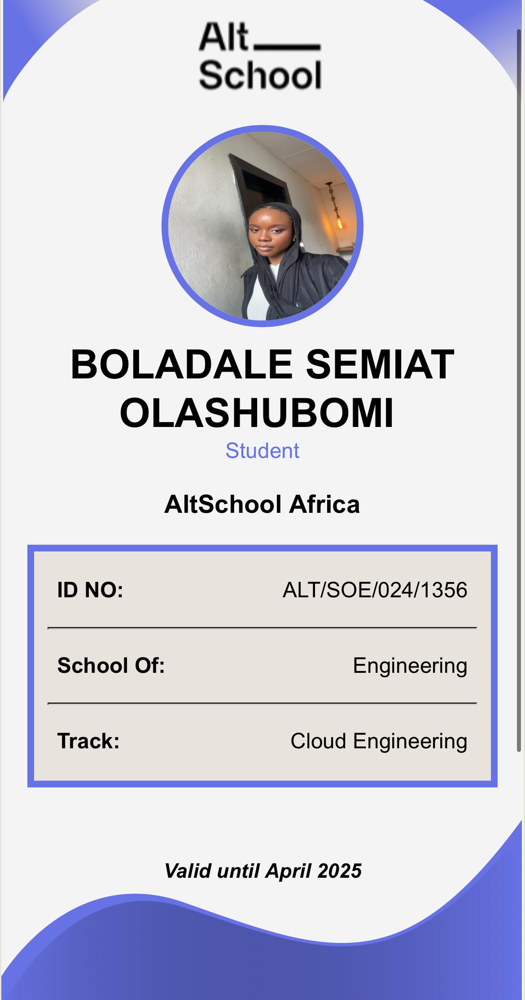

Boladale Semiat Olashubomi
ID number; ALT/SOE/024/1356
track : Cloud Engineering
Here is a short biography:
Meet Semiat, a 20-year-old biology student with a passion for learning and exploration. Currently in her third year of university, she is not only excelling in her studies but also pursuing her interests in tech. With a love for reading fiction and a curiosity about the potential of web 3, she is always seeking new knowledge and ideas.In addition to her university coursework, Semiat is also studying cloud engineering through an online program. Her enthusiasm for tech and innovation is matched only by her love of solitude, where she finds the space to think, learn, and grow. With a unique blend of scientific and technological interests, Semiat is a bright and energetic young woman with a wealth of ideas and a desire to make her mark on the world. As she continues on her academic and professional journey, she is sure to make a lasting impact in whatever field she chooses to pursue. 
REASON FOR JOINING Altschool
1. Flexibility: ALTSCHOOL allows you to study at your own pace, anytime, and from any location.2. Accessibility: Online courses and resources make tech education accessible to people with varying schedules, budgets, and locations.
3. Self-Paced: It enables you to learn at your own speed, reviewing material as needed, and accelerating when ready.
4. Autonomy: AltSchool gives you control over your learning environment, allowing you to focus and learn without distractions.
Goals for Schoool of Engineering Programme
My main goal is to be a compitent cloud engineer by the end of next yearCloud computing advantages inculdes the following; 1. High demand: Cloud computing skills are in high demand, and knowledge in this area can lead to excellent job prospects.
2. Career opportunities: Studying cloud computing opens doors to various roles, including cloud architect, engineer, and security specialist.
3. Flexibility: Cloud computing enables remote work and flexible work arrangements.
Back to Top